EBU Dynamic Media Facility
DMF concepts help frame the facility model. dmfdeploy is an independent initiative, not an EBU product or endorsement.

dmfdeployIndependent open infrastructure / Broadcast & media
dmfdeploy is building vendor-neutral infrastructure for software-defined media facilities: a common place to declare intent, deploy workloads and see what is running.
Open source · Community-governed · Prototype in development
01 / Why this exists
Broadcast engineering is moving from fixed appliances to software, IP and commodity compute. Yet every facility still has to stitch together deployment, inventory and operational visibility for itself.
dmfdeploy explores a shared, open foundation for that work. The aim is practical interoperability and clearer system boundaries, shaped in public with manufacturers, broadcasters and integrators.
02 / Architecture
The current prototype connects a small set of proven open tools. This is the v0.1 control path and intended observation loop, not a production broadcast plant.
Select a catalog function and request a deployment.
IntentApply the workload through automation and Helm.
ExecutionHold the declared function and lifecycle state.
RecordSurface targets and health back to the operator.
Observe→ Intent and deployment command← Health and observed state
03 / Standards & tools
The architecture uses existing standards and open-source components where they serve a clear job. Each integration is described at its actual stage.
DMF concepts help frame the facility model. dmfdeploy is an independent initiative, not an EBU product or endorsement.
IS-05 controlled workload switching is a v0.2 target. It is not an implemented v0.1 capability.
04 / Project status
The prototype is not a production ST 2110 or PTP plant, a high-availability platform, or a validated performance benchmark. Multi-node operations and federation remain outside the current demonstrated scope.
05 / Participation
Project proposals move through public discussion, design records and reviewed contributions. Maintainers keep the work under Apache-2.0 and welcome manufacturers, broadcasters and integrators to challenge assumptions and reproduce the prototype.
Founding support / Programme proposed
Founding sponsors can fund the open engineering and documentation needed to make the prototype repeatable and useful across the industry.